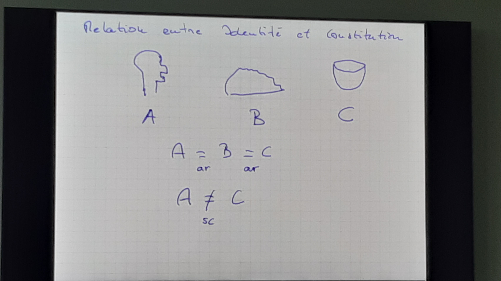

Intentionalite
Differenz zwischen Désir singulier und désir généeral#
- Désir singulier: ich will diesen einen Bären Teddy -> haecceitas
- Désir géneral: Es ist ok, wenn ich einen Bären bekomme, der in allen Aspekten von Teddy nicht unterscheidbar ist.
- Brentano glaubt, dass es eine singuläre Inteionlität gibt.
Leibniz Monaden#
Identité des Indiscernables: - Deux objects doives se differencier qualitiativement; il n'y a pas deux monades identiques. - Gott macht nichts ohne Grund; es gibt keinen Grund zwei identische Objekte zu kreieren.
Le Probème de l'intenSionalité#
- Les états intentionnels en ou contexte intensionnel
- Dans les contextes intenSionnels les termes ne sont pas tous substituables salva veritable (s.v.)
Deux termes ou expressions linguistiques sont coréférentiels quand ils font référence de mene ...
Contexte intensionnel#
- a = b
- K est un contexte dans lequel les 2 termes apparaissent.
- K est extensionnel ssi: Ka <-> Kb
- K est intensionnel ssi: !(Ka <-> Kb)
Beispiele#
- Jean = le seul frère de Marc
- Anne croit que Jean est grand
-
Anne ne croit pas que le seul frère de Marc est grand. -> Pas de contradiction, si Anne ne ne savait pas que Jean est le seoul frère de Marc.
-
Le vent cause l'avalanche
- Le vent cause la descente de la neige
-
avalanche = descente de la neige
-
Mon intention de aller skier a causé ma descente à ski
- Mon intention de aller skier a causé ma commotion cérébrale.
-> Anscombe - Truth under a description
Theorie de jugement chez Brentano#
- Platon = élève de Socrate = l'aut. de la Rép.
- Jean croit que Platon est sage.
- Jean croit que l'élève de S. est sage.
-
Jean croit que l'auteur de la Reb. est sage.
-
Le contexte intentionell est crée par le "croit"
- Si Jean ne connais pas 1, ce n'est pas forcement dit que 2-4 sont vrais.
Brentano:
2b. Jean accepte l'object complex (Sagesse qui contient Platon) 3b. Jean accepte l'object complex (Sagesse qui contien l'élève de Socrate) 4b. Jean accepte l'object complex (Sagesse qui contien l'auteur de la Rép.)
-> Jean accepte 3 objects differents. (C'est trois attributes differents.) - L'object chez 3 peux transformer en: Sagesse qui contien l'élève de Socrate, qui contien Platon. Item avec 3b.
-> Méreologie
Prüfung#
examen ecrit: 18 decemenbre on resoivent des questions; 2 semaines pour repondre; texte de 3-5 pages examen orale: 25 janvier; preparer un texte / un article, un chapitre; resumer à 5-7 minutes, après discution
Brentanos Unterteilung in intentionale und reele Objekte (?)#
3 attitude pour comprendere: - Distinquer des identiques relative des identiques absolue - objects intentionel sont comme objects fictionnels - objects intentionls sont des objects possible
A = B = C Ai != Bi != Ci
Relation entre Identité et Constitution#

-> Distinquer des identiques relative des identiques absolue
Objets fictionnels#
des objets intentionel sont pas des objects réesls, c'est comme des objects fictionnels.